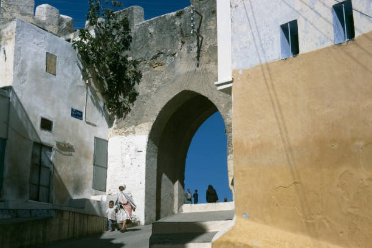
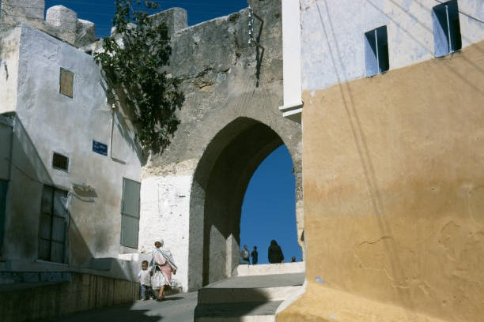
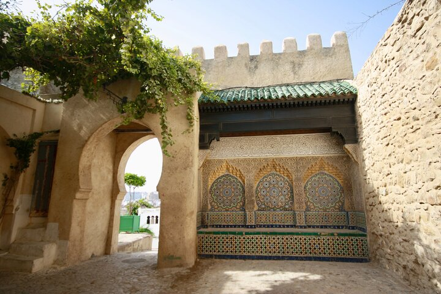
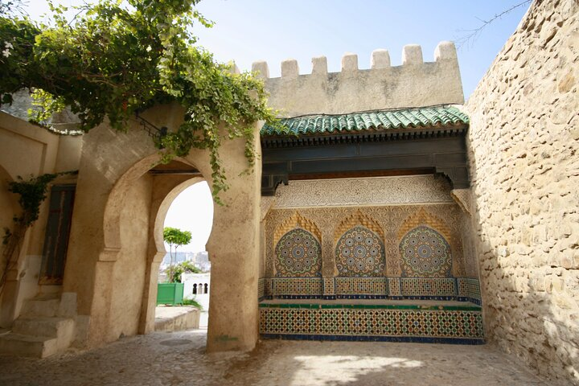

Tangier, located at the crossroads of Europe and Africa; it has a rich
and diverse history, dating back to ancient times.Its strategic location
at the entrance to the Mediterranean made it a vital trade hub. Founded
by the Phoenicians, it later became an important Roman port. After the
fall of the Roman Empire, Tangier was influenced by various cultures,
including Byzantines and Arabs.each leaving their mark on the city's
culture and architecture.
In the 20th century, the city gained prominence as an international
zone, attracting writers, artists, and diplomats from around the world.
This period contributed to its reputation as a cultural melting pot. The
influence of European powers, particularly Spain and France, is still
evident in its architecture and lifestyle.
This unique status fostered a cosmopolitan atmosphere, blending various
cultures and influences.
Today, Tangier is celebrated for its rich history, vibrant medina, and
stunning coastal views, making it an intriguing gateway to Morocco.
Top Tangier's attractions
The Medina
Café Hafa
A mix of Moroccan and European influences,
with vibrant markets and narrow streets.
Famous for its stunning views of the
Mediterranean Sea and relaxed atmosphere.
 
{kind=link}
{kind=link}
{kind=link}
 
{kind=link}
{kind=link}
{kind=link}